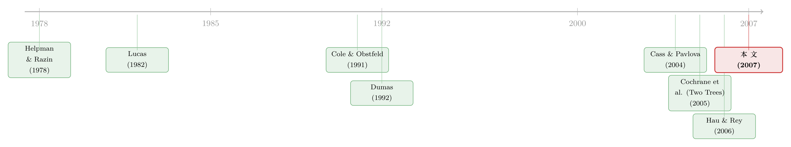

汇率，是股市之间那根看不见的传声筒
本文读的是 Pavlova & Rigobon (2007, Review of Financial Studies)：作者在一个两国、两种商品的连续时间一般均衡模型里，让 贸易条件 (terms of trade) ——也就是汇率——重新成为连接各国股市、债市的传声筒；再往这个本来只有「供给冲击」的世界里塞进一类「需求冲击」，于是供给冲击让股市同向联动、需求冲击让股市反向背离。模型可闭式求解，实证发现需求冲击的重要性大约是供给冲击的两倍。
1 引言：一个被「单一商品」抹掉的常识
财经版面早就把这件事说滥了：股价和汇率是一对纠缠不清的难兄难弟。2000 年代初，美元对欧元持续贬值，被认为压垮了投资者情绪、拖累了美股；而再往前一个十年，美国生产率高歌猛进、股市一路走牛，恰恰伴随着美元的升值。这些联系，街头巷尾人尽皆知。
可奇怪的是，在汇率决定的那些「主力机型」模型里，这层联系几乎从来没被认真对待过。为什么？
答案藏在一个被绝大多数国际资产定价模型默认接受的简化里：单一商品 (single good)。如果全世界只生产、消费一种同质的商品，那么按定义，贸易条件和实际汇率就只能恒等于 1——它们根本没有波动的余地。于是汇率这个变量，在这类模型里要么被「运输成本」硬生生塞进来，要么靠外生地指定一套货币政策、再去盯名义汇率。真正把贸易这件事写进资产定价骨架里的，凤毛麟角。
这就是本文要补的那块缺口。Pavlova 和 Rigobon 的核心贡献，是搭起一个可解的两国两商品资产定价模型，让贸易条件（以及由它决定的汇率）重新回到舞台中央，去驱动各国股市与债市的动态。
2 老问题：那个「刀锋上的」尴尬均衡
首先要交代一段前史。其实，在本文之前，已经有三篇可解的资产定价模型沿着「两种商品」的路子走过：Helpman and Razin (1978)、Cole and Obstfeld (1991)、Zapatero (1995)。它们都很漂亮，但都撞上了同一堵墙。
这三篇模型有一个共同的、令人尴尬的推论：贸易条件的变动会恰好完全抵消产出冲击，于是在均衡里，所有国家的股票分红（up to 一个乘数常数）都变得一模一样。后果是什么？全世界股市完美相关，而且——国际分散投资毫无意义。
这显然不对劲。事实上，三篇文章的作者都老老实实承认，这种均衡是「刀锋上的 (knife-edge)」特例，并呼吁后人找到一个具有「正常」均衡行为的变体。Cass and Pavlova (2004) 甚至专门给这种均衡起了个名字，叫「古怪金融均衡 (peculiar financial equilibrium)」，并细数了它的种种反常。
接着，一个自然的问题是：怎么打破这个刀锋？
3 关键一步：把「需求冲击」请进门
本文给出的答案，是引入作者所谓的需求冲击 (demand shocks)。
在这个经济里，不确定性原本只有两个来源——两国各自的产出冲击（即 供给冲击 (supply shocks)）。这是国际实际经济周期 (international real business cycles) 文献里的标配。但作者多加了第三维布朗运动，用它驱动消费者的需求冲击 \(\theta_H, \theta_F\)。
这一步看似平淡，却是整篇文章的枢纽。因为正是它，让股市之间不再必然「完美同步」，从而得以谈论真正有血有肉的国际金融市场动态与溢出效应，同时还保住了模型的可解性 (tractability)。
但真正关键的，是这两类冲击会催生两种截然相反的市场联动模式。这正是本文最值得反复咀嚼的那「一个核心」。
-
供给冲击 → 同向联动（co-movement）。 假设本国出现一个正向产出冲击。一方面，本国股市上涨（资产定价的常识）；但另一方面——这里是李嘉图的影子——它必然伴随本国贸易条件的恶化：本国商品变得相对不再稀缺，相对价格下跌。而贸易条件恶化的反面，是外国贸易条件的改善，外国产出的价值因此上升，外国股市也跟着被抬起来。注意，这个论证完全不依赖两国产出本身的相关性（模型里 \(w\) 和 \(w^*\) 是独立的）。汇率市场，在这里扮演了一条把冲击向国际传导的暗渠。
-
需求冲击 → 反向背离（divergence）。 本国出现一个正向的相对需求冲击，意味着需求向本国商品倾斜，于是本国贸易条件改善。改善的贸易条件抬高了本国产出的价值，本国股市上扬；而与此同时，外国产出价值下降、外国股市走低。作者把这种「你涨我跌」叫做「背离」。
于是反转出现了：一个没有供给冲击、只有需求冲击的世界，就是一个「完美背离」的世界——各国资产市场永远朝相反方向运动。这恰好是老模型「完美正相关」的镜像。两类冲击同时在场，市场的相关性便可以落在两个极端之间的任意位置，由它们的相对方差来调音。
（关于「两棵独立的树如何通过价格彼此牵连」这个一般均衡直觉，可参见《两棵树的寓言：当「i.i.d. 收益」撞上「卖不掉的股票」》；本文与 Cochrane, et al. (2005) 的 Two Trees 是同一时期、互相呼应的思路。）
4 模型：从 Lucas 树到闭式股价
这是一篇有完整理论模型的论文，值得把骨架一步步搭出来。
4.1 设定
经济是 Lucas (1982) 式的连续时间纯交换经济，时间区间 \([0,T]\)，三维标准布朗运动 \((w, w^*, w^\theta)\)。两国 Home / Foreign 各自生产一种易腐商品，产出是 Lucas 树：
$$dY(t)=\mu_Y(t)Y(t)\,dt+\sigma_Y(t)Y(t)\,dw(t)$$
$$dY^*(t)=\mu_Y^*(t)Y^*(t)\,dt+\sigma_Y^*(t)Y^*(t)\,dw^*(t)$$
注意两国产出的布朗冲击 \(w\) 与 \(w^*\) 相互独立——这一点后面会反复用到。本国、外国商品价格记为 \(p, p^*\)，贸易条件定义为本国商品相对外国商品的价格：\(q \equiv p/p^*\)。
每个国家有一位代表性消费者，从两种商品中获得对数效用，但带一个时变的「需求权重」\(\theta_i\)：
$$E\!\left[\int_0^T e^{-\rho t}\theta_H(t)\big(a_H\log C_H(t)+(1-a_H)\log C_H^*(t)\big)\,dt\right]$$
$$E\!\left[\int_0^T e^{-\rho t}\theta_F(t)\big(a_F\log C_F(t)+(1-a_F)\log C_F^*(t)\big)\,dt\right]$$
这里 \(a_H, a_F\) 是各国对本国商品的偏好权重。本土偏好 (home bias) 通过假设 \(a_H > a_F\) 来刻画——它是后面几乎所有结论符号的关键。
而需求冲击 \(\theta_H, \theta_F\)，是被 \(w\) 驱动的正值适应过程，初值为 1。作者对它们只提一个要求：必须是鞅 (martingale)，即 \(E_t[\theta_i(s)]=\theta_i(t),\ s>t\)。这个设定极其一般，作者后面才按不同解读（纯情绪、catching up with the Joneses、观点分歧）往里灌结构。
为什么 \(\theta\) 要是鞅？直觉上，需求冲击应当是「没有可预测漂移」的纯意外——今天的需求偏好是对未来需求偏好的无偏预测。这保证了它是真正的「冲击」，而非可被套利掉的趋势。
4.2 社会计划者与分享规则
金融市场未必完备（三个不确定性来源、四个证券，且禀赋以股票份额给出），但帕累托最优依然成立，所以可以用社会计划者问题求解。计划者以权重 \(\lambda_H, \lambda_F\) 最大化加权效用，受两条资源约束（两种商品分别出清），乘子记为 \(\eta(t), \eta^*(t)\)。
一阶条件给出对数偏好下熟悉的分享规则，例如本国对本国商品的消费：
$$C_H(t)=\frac{\lambda_H\theta_H(t)a_H}{\lambda_H\theta_H(t)a_H+\lambda_F\theta_F(t)a_F}\,Y(t)$$
值得一提的是：尽管风险被完美分担，某种商品的消费与其总产出的相关性却不再完美——正是需求冲击 \(\theta\) 在分子分母里搅动，把这层相关性打散了。这一点稍后会成为缓解国际实际经济周期文献里「消费相关之谜」的钥匙。
4.3 核心方程：贸易条件
把两条资源约束的乘子相除，就得到均衡贸易条件——它也正是两国对本国、外国商品边际效用之比：
这一个方程把整篇文章的两条暗线都缝进去了：
第一条线（李嘉图的供给侧）。 贸易条件随外国产出 \(Y^*\) 上升、随本国产出 \(Y\) 下降。本国产出一多，本国商品相对不稀缺，贸易条件恶化——这正是李嘉图贸易模型里标准的「贸易条件效应」[见 Ricardo (1817)、Dornbusch, et al. (1977)]。过去的资产定价文献，靠「单一商品」假设，把这条线整个抹掉了。
第二条线（开放宏观的需求侧）。 贸易条件还取决于需求冲击之比 \(\theta_H/\theta_F\)。在本土偏好下，可以证明
$$\operatorname{sign}\!\left(\frac{\partial q}{\partial(\theta_H/\theta_F)}\right)=\operatorname{sign}(a_H-a_F)>0$$
也就是说，需求向本国倾斜会改善本国贸易条件、令汇率升值。这正是开放宏观里「依赖型经济 (dependent economy)」模型 [Salter (1959), Swan (1960), Dornbusch (1980)] 的经典结论。
4.4 股价：闭式解与一条优雅的桥
用无套利估值，股票是本国产出现金流的折现：
$$S(t)=E_t\!\int_t^T\frac{\xi(s)}{\xi(t)}p(s)Y(s)\,ds,\qquad S^*(t)=E_t\!\int_t^T\frac{\xi(s)}{\xi(t)}p^*(s)Y^*(s)\,ds$$
显式求积分（细节在附录 A），得到漂亮的闭式股价：
$$S(t)=\frac{1-e^{-\rho(T-t)}}{\rho}\cdot\frac{q(t)}{\alpha q(t)+1-\alpha}\,Y(t)$$
$$S^*(t)=\frac{1-e^{-\rho(T-t)}}{\rho}\cdot\frac{1}{\alpha q(t)+1-\alpha}\,Y^*(t)$$
每国股价都正向挂钩本国产出（资产定价常识）。但两国产出冲击明明是独立的，股市却并非互不相关——相关性恰恰是通过两式中共同出现的贸易条件 \(q(t)\) 注入的。把两式相除，得到一座连接两国股价与贸易条件的桥：
$$S^*(t)=\frac{1}{q(t)}\frac{Y^*(t)}{Y(t)}\,S(t)$$
4.5 Proposition 1：把所有符号钉死
最后，作者用伊藤引理把五个市场（两国股、两国债、贸易条件）的动态写成一个由三个冲击 \((d\theta, dw, dw^*)\) 驱动的线性系统。在 \(a_H>a_F\) 的本土偏好下，扩散系数的符号被唯一地钉死：
| 变量 \ 对…的反应 | \(d\theta(t)\)（需求） | \(dw(t)\)（本国供给） | \(dw^*(t)\)（外国供给） |
|---|---|---|---|
| \(dS/S\)（本国股） | $+$ | $+$ | $+$ |
| \(dS^*/S^*\)（外国股） | $-$ | $+$ | $+$ |
| \(dB/B\)（本国债） | $+$ | $-$ | $+$ |
| \(dB^*/B^*\)（外国债） | $-$ | $+$ | $-$ |
| \(dq/q\)（贸易条件） | $+$ | $-$ | $+$ |
读这张表，整篇文章的故事一目了然：看 \(dw\) 那一列，两国股票同为 $+$——供给冲击带来同向联动；看 \(d\theta\) 那一列，本国股 $+$、外国股 $-$——需求冲击带来反向背离。这两句话，就是 Pavlova-Rigobon 的全部精华。
5 实证：需求冲击，竟比供给冲击重要一倍
理论说得再漂亮，也得让数据说话。这正是本文第二个让人记住的地方：它的闭式系统天然就是一个潜在因子模型 (latent factor model)，可以直接拿去估计。作者把模型映射到名义数据上，估出来三件事：
第一，需求冲击的重要性大约是供给冲击的两倍。 也就是说，在描述股、债、汇的联动行为时，那个一向被国际实际经济周期文献冷落的需求冲击，才是主角。这与正文脚注里的一段论证遥相呼应：在本文里相对风险厌恶系数等于 1（对数效用），状态价格密度本不该比消费波动得厉害；但波动的需求冲击恰好能让它变得很「凶」——而数据确实显示需求冲击远比供给冲击波动剧烈。
第二，需求冲击的「性格」被甄别了出来。 作者区分了四种解读：(i) 没有需求冲击；(ii) 纯消费者情绪 (pure sentiment)；(iii) 带「catching up with the Joneses」特征的偏好 [Abel (1990)]；(iv) 偏好状态无关、需求冲击源于观点分歧 (differences of opinion)。数据拒绝了「纯情绪」与「攀比型」这两种假设，转而支持需求冲击更像是观点分歧或一种消费者信心。
第三，供给与需求因子在样本外，对若干宏观变量具备预测力。 这进一步给理论的动态含义背书。
（把「分歧」请进资产定价、并追问分歧究竟是关于「数字本身」还是「数字有多可信」，是一条至今活跃的支线，可参见《分歧的两副面孔：当投资者争的不是「数字」，而是「数字有多可信」》。）
6 文献脉络
这篇文章像一个枢纽，把分散在国际经济学与国际金融两条河道里的支流，汇到了同一个均衡设定里。
最上游是 Lucas (1982)——两国世界里利率与货币价格的奠基性纯交换框架，本文的连续时间骨架直接脱胎于此。沿着「两种商品」这条窄路往下，是 Helpman and Razin (1978)、Cole and Obstfeld (1991) 和 Zapatero (1995) 三篇可解模型，它们都漂亮、却都困在「股市完美相关、分散投资无意义」的刀锋均衡里。Dumas (1992) 则代表另一条路——往实际模型里塞运输成本以挤出汇率波动。Cass and Pavlova (2004) 把前一类均衡的反常性质系统地剖析了一遍，并给它起名「古怪金融均衡」，等于替本文画好了靶子。

与本文几乎同时，Cochrane, Longstaff, and Santa-Clara (2005) 的 Two Trees 在封闭经济里讲了一个结构相近的故事：两棵独立的树如何通过价格彼此牵连。而在实证连接股价与汇率、资本流动的方向上，Hau and Rey (2006) 是同期的重要参照。本文的位置，是用一个既能产生正常动态、又保持闭式可解的两国两商品模型，把「供给→同向、需求→背离」这对镜像机制统一起来——既补上了老模型的刀锋之憾，又给汇率在资产定价里争回了一个本不该被抹掉的角色。
7 评论与延伸（Q&A + 研究方向）
(a) 几个可能的疑问
Q：两国产出冲击明明独立，凭什么股市会相关？这不是自相矛盾吗？
不矛盾，关键在「价格」这条暗渠。相关性不是来自产出本身（\(w \perp w^*\)），而是来自共同出现在两国股价里的贸易条件 \(q(t)\)。一个本国供给冲击会通过李嘉图式的贸易条件恶化，间接抬高外国产出的价值。这恰是本文对「金融传染 (contagion)」的再定义：联动不只是产出相关的镜像，还包括一般均衡里价格自身的自然传导。
Q：所谓「需求冲击」到底是什么？会不会只是给残差起了个好听的名字？
这是最该追问的一点。在最一般的设定里，\(\theta\) 只被要求是鞅，确实抽象。但本文的价值恰在于：它没有止步于此，而是用数据去甄别这个冲击的性格，拒绝了「纯情绪」和「攀比」，指向「观点分歧 / 消费者信心」。换句话说，作者把一个抽象的自由度，逼成了一个可证伪的实证对象。
Q：为什么是需求冲击、而不是别的东西，打破了刀锋均衡？
因为老模型的病根在于「贸易条件恰好完全抵消产出冲击」，这要求需求结构是死的。一旦引入一个独立于产出、且在两国间有差异的需求维度（再叠加 \(a_H\neq a_F\) 的本土偏好），贸易条件就不再被产出唯一锁定，分红也不再跨国趋同，刀锋自然就破了。
Q：相对风险厌恶只有 1（对数效用），状态价格密度怎么可能比消费还波动？
一般论证里，状态价格密度要比消费波动得多，需要很高的效用曲率。但本文给了第三条路：等式左边可以因为需求冲击本身的高波动而剧烈起伏，无需抬高风险厌恶。实证也确认了需求冲击远比供给冲击波动大——这正是它能解释诸多「过度波动」现象的根源。
Q：模型里有没有不太现实的地方？
作者自己坦诚：由于对数线性偏好，股价-分红比是确定性的时间函数，这显然过强。此外实际汇率的波动在基线模型里完全由可贸易品的贸易条件驱动，不可贸易品相对价格的渠道被略去了——作者援引 Engel (1999) 辩护说后者对美国实际汇率几乎没有贡献，但这终究是个可争议的简化。
Q：这对「国际分散投资无意义」的老结论意味着什么？
彻底翻案。老的刀锋模型里各国股市完美相关，分散投资毫无收益。本文一旦引入需求冲击，股市相关性被打散，背离效应出现，国际分散重新有了价值；作者还解出组合，发现存在一个由需求冲击带来的额外对冲组合，使持仓偏向本国资产。
(b) 几个可能的研究问题与提案
1. 把「需求冲击」搬到公司债与信用利差上
【经济故事】本文证明需求冲击是股、债、汇联动的主因。一个自然的延伸：在信用市场，本国相对需求改善抬高本国产出价值，按理应同时压低本国违约概率、收窄信用利差，并通过贸易条件向外国利差「背离」式传导。这把「供给→同向、需求→背离」的镜像机制搬进了信用市场。 【可行性】中。数据上 TRACE + 跨国信用利差可得，识别难点在于把「需求冲击」从宏观因子里干净地剥出来——可借用本文的潜在因子估计框架，但跨国信用数据的可比性是真实障碍。
2. 外资持有人结构如何调音两类冲击的相对权重
【经济故事】本文里两类冲击的相对方差决定了股市相关性的位置。如果一国资产被外资大量持有，需求冲击的来源、传导是否会被重塑？外资可能正是「需求冲击」的一个具体载体。 【可行性】高。可投资度 (investability) 放开、指数纳入等事件提供准自然实验，配合 EPFR / 持仓数据，识别相对干净。（与《外资真是「蝗虫」吗？》的长期视角可互补。）
3. 用期权市场检验「背离 vs 同向」的状态依赖
【经济故事】本文给出供给、需求冲击下各市场反应的符号与敏感度，并有跨方程约束。这些约束在尾部（危机时）是否依然成立？危机里需求冲击是否压倒供给冲击、把背离放大成「一起跳水」？ 【可行性】中。需要货币期权与股指期权的隐含相关，识别要靠模型的跨方程约束做结构估计——doable 但对数据频率与模型设定较敏感。（同期一般均衡定价货币期权的思路，见《汇率为什么「不肯」波动？》。）
4. 给「消费相关之谜」做一次现代复检
【经济故事】本文称需求冲击能在完美风险分担下显著降低两国消费指数的相关性，从而缓解 Backus-Kehoe-Kydland 之谜。这个机制在更长样本、更多国家上是否稳健？需求冲击的可识别份额有多大？ 【可行性】中。宏观消费数据可得，但把「需求冲击」结构性地识别出来、并与谜题的数量级对账，是硬骨头。
我的判断
这篇文章的贡献是「把一个常识请回模型」：财经媒体早就在说股价与汇率纠缠，而主流国际资产定价却因「单一商品」的便利把它丢了。Pavlova 和 Rigobon 的聪明之处，在于只用一个最小的增量——独立的需求冲击 + 本土偏好——就同时做到了三件难以兼得的事：打破老模型的刀锋均衡、产生「供给同向 / 需求背离」这对干净的镜像机制、并保持完整的闭式可解。理论的优雅与实证的可操作性在这里难得地合一。
对识别，我最大的保留在于「需求冲击」的经济内涵。它在最一般设定下只是个被约束为鞅的自由度，实证上虽被甄别为「观点分歧 / 消费者信心」，但这一甄别依赖于模型映射本身是否正确——若映射设定有偏，「需求冲击是供给两倍」这个抢眼数字的解读就要打折。此外，对数偏好带来的确定性股价-分红比、以及忽略不可贸易品渠道，都是为可解性付出的代价。
后续我最想看到的，是把这套机制接到信用市场与外资持有人结构上去：如果「背离」真的是需求冲击的指纹，那么它在违约风险、信用利差、跨境资本流动里应当留下同样可检验的符号。那将是对这篇 2007 年文章最好的当代回访。
参考文献
Abel, A. B. (1990). Asset Prices under Habit Formation and Catching up with the Joneses. American Economic Review 80, 38–42.
Backus, D. K., Kehoe, P. J., and Kydland, F. E. (1992). International Real Business Cycles. Journal of Political Economy 100, 745–775.
Cass, D., and Pavlova, A. (2004). On Trees and Logs. Journal of Economic Theory 116, 41–83.
Cochrane, J. H., Longstaff, F. A., and Santa-Clara, P. (2005). Two Trees. Working paper, University of Chicago.
Cole, H. L., and Obstfeld, M. (1991). Commodity Trade and International Risk Sharing. Journal of Monetary Economics 28, 3–24.
Dornbusch, R., Fischer, S., and Samuelson, P. A. (1977). Comparative Advantage, Trade, and Payments in a Ricardian Model with a Continuum of Goods. American Economic Review 67, 823–839.
Dumas, B. (1992). Dynamic Equilibrium and the Real Exchange Rate in a Spatially Separated World. Review of Financial Studies 5, 153–180.
Engel, C. (1999). Accounting for U.S. Real Exchange Rate Changes. Journal of Political Economy 107, 507–538.
Hau, H., and Rey, H. (2006). Exchange Rate, Equity Prices and Capital Flows. Review of Financial Studies 19, 273–317.
Helpman, E., and Razin, A. (1978). A Theory of International Trade under Uncertainty. Academic Press, San Diego, CA.
Lucas, R. E. (1982). Interest Rates and Currency Prices in a Two-Country World. Journal of Monetary Economics 10, 335–359.
Pavlova, A., and Rigobon, R. (2007). Asset Prices and Exchange Rates. Review of Financial Studies 20(4), 1139–1180.